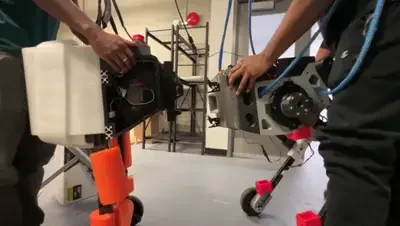
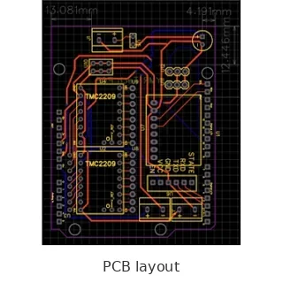
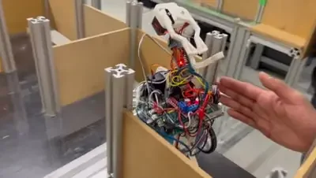
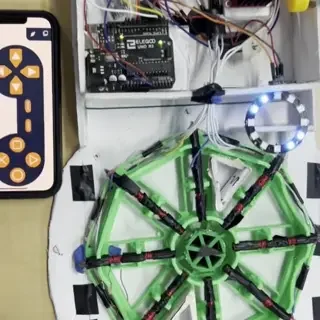
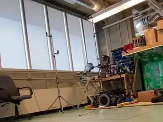
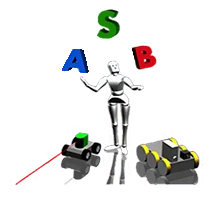
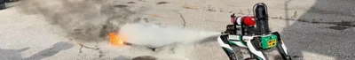

Manuscript 1
In preparation
Details forthcoming.
I’m a PhD researcher at the University of Toronto Robotics Institute. My research focuses on robot learning in human-centric environments, exploring how foundation models can enable mobile manipulators to work alongside and assist people.
During my undergraduate studies, I was part of the Mechatronic and Robotic Systems Laboratory (MARS Lab) at Ontario Tech University.
I’m a member of the U of T Varsity Blues wrestling team.
In preparation
Details forthcoming.
In preparation
Details forthcoming.


2024
Designed a custom printed circuit board (PCB) in EasyEDA for an automated package sorter. Built the conveyor and implemented color sensing, stepper-driven dispensing, and servo-based sorting with direct AVR port control.




Robotics Engineer Intern
Dec 2025–Feb 2026
Supported development of bimanual garment-folding workflows with PiperX arms, LeRobot, and VLA models, including the demonstration recording and policy rollout pipeline.
PEY Intern, Refurbishment Execution
May 2023–Sep 2024
Supported nuclear refurbishment execution, sensor commissioning, engineering changes, and vendor coordination.

PhD Researcher
Present
Robot learning and foundation models for mobile manipulation in human-centric environments.

Robotics Research Assistant (NSERC)
May–Sep 2022
Developed ROS-based UAV autonomy, localization, and sensing for mixed aerial and ground robot research.
PhD, Mechanical & Industrial Engineering — Specialization in Robotics
2025–present
BEng (Hons), Mechatronics Engineering
2020–2025